来源：https://yq9pu32e9v.feishu.cn/docx/P2XLdJF2yoivV8xUDszcz853nZg
前几天，我对象说如果有个工具，能把推特的账号发送的内容在很短的时间之内推到微信就好了，这样就能掌握很多web3圈内大佬的消息，跟着他们的步伐做项目了。
有需求，就能满足。
接着我开始百度找工具，因为推特是国外的平台，国内的很多软件都不能用，最终我找到了个IFTTT这个平台，这个平台就是自动化的，也不需要自己写代码，编辑上一些参数就行了。
这个平台有两个推送方式：
1、推特用户更新内容后，以邮件方式将推特内容推送到指定邮箱
2、推特用户更新内容后，通过企业微信群的机器人将内容推送到企业微信群（钉钉也同理）
这两个方法我都测试了，都是可以的，在这篇文章里我都会写出来。
先把平台注册了，注册连接：点我跳转到注册地址
对了，手机上也是一样的操作，而且手机上还有很多地方是中文的
注册后，点击上面的My Applets
免费用户只能搞2个推送机器人，还有两个付费版本，根据自己的需要购买
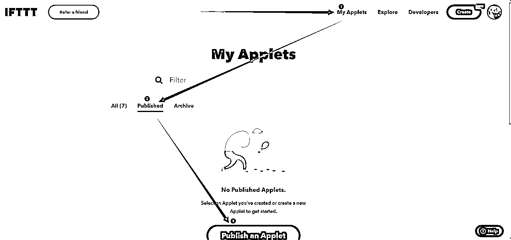
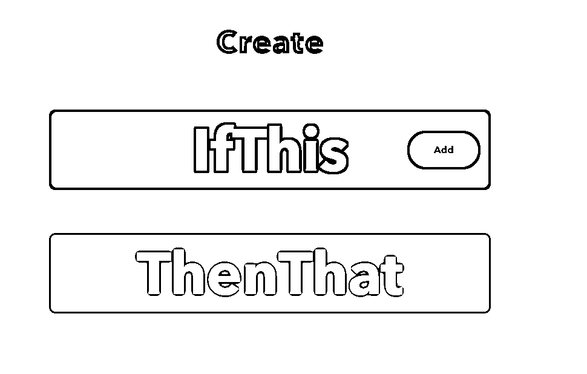
进来之后，会出现这个，第一行的意思是：如果这样 第二行的意思是：就会那样
合起来就是：如果这样了，那就会那样
理解了这句话，在这个工具上就能玩出很多的花样，比如说现在有人通过这个工具自动把微博的内容同步到推特（这些在油管上有教程，看得懂英文的在工具里也可以直接拿别人的用）
点击 if this 后面的add 出现下面的界面
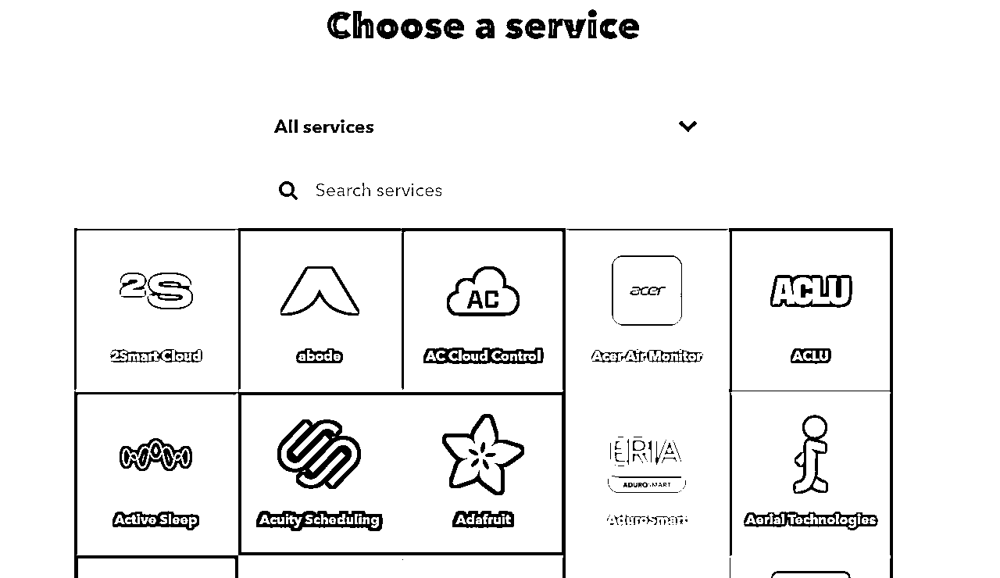
在放大镜后面搜索 twitter 选择推特平台
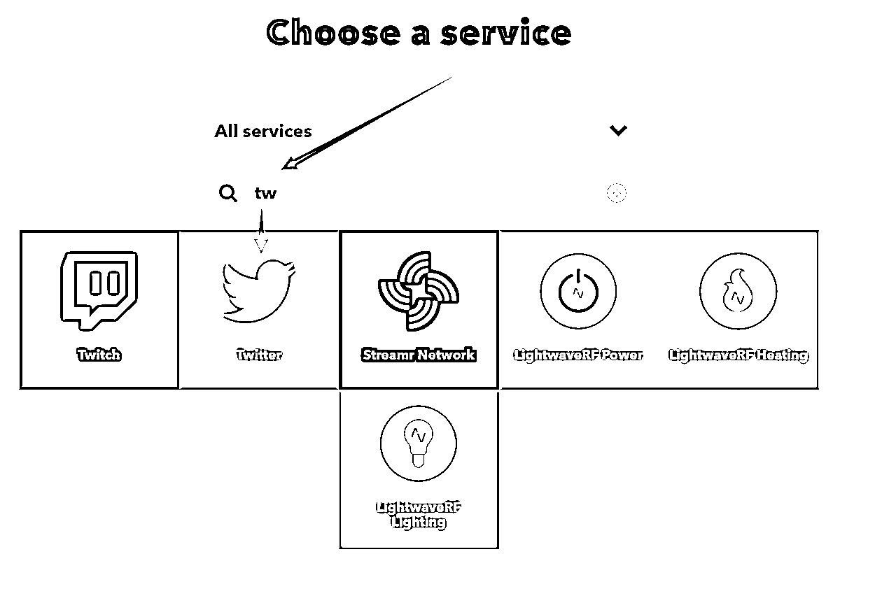
接着会出来很多选项让你选择，用电脑浏览器的话可以自己翻译，我们要用的是“指定用户更新推特触发”，就选择箭头指的那个，如果你有别的需求，就翻译一下选择别的
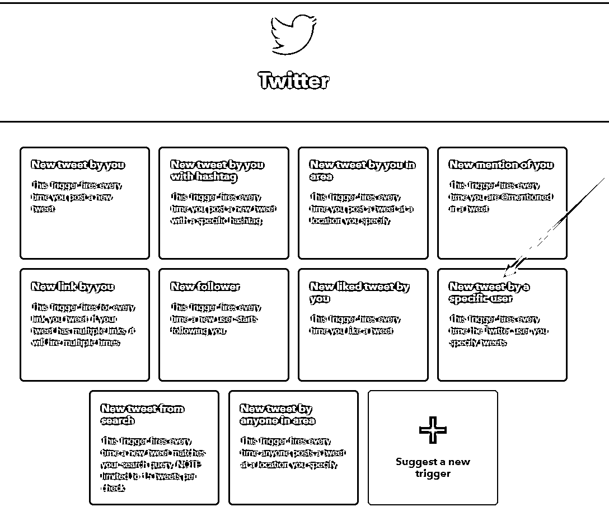
选择后，进入到下一个页面，选择账号
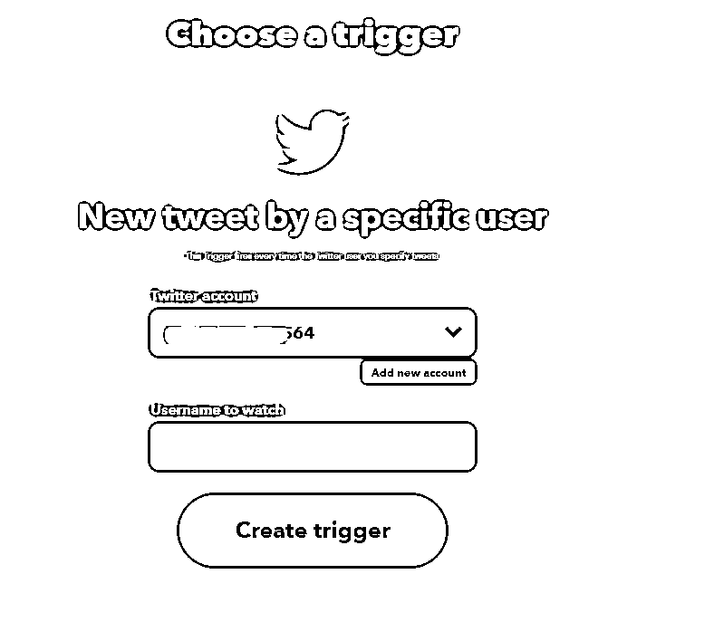
这里要填两个账号，第一行的账号是自己的账号，第二行是要监控的账号。
点击 add new account 会弹出来让你授权
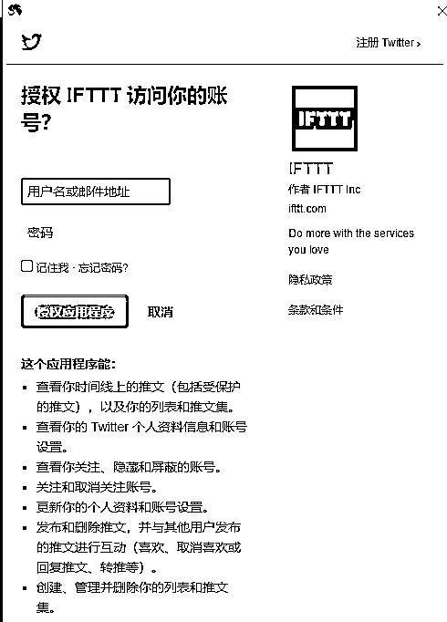
这里输入自己的推特账号密码就行了。
然后在Username to watch 填入你要监控的推特账号
最后点击 Create trigger
提交后，会返回到下面界面
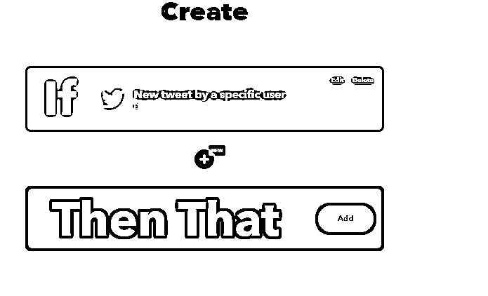
在下面的then that设置触发后的动作，邮箱推送和企业微信推送的区别就是触发后的动作不同。
点击 then that 后面的add 进行添加 ，会进入到选择工具的界面，这里输入 email
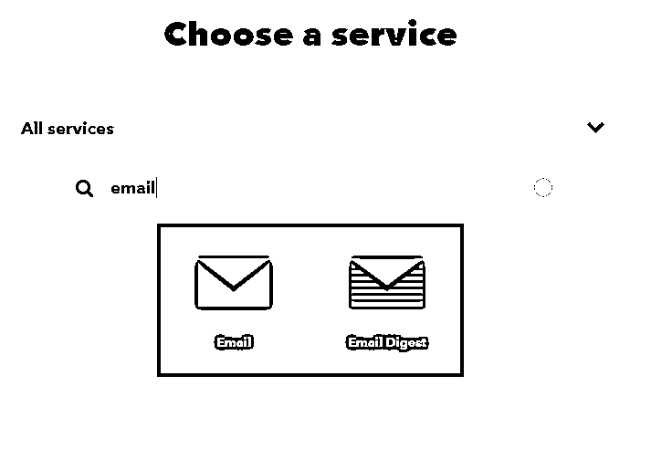
进入到下一个页面，只有一个可选项，这里就选它
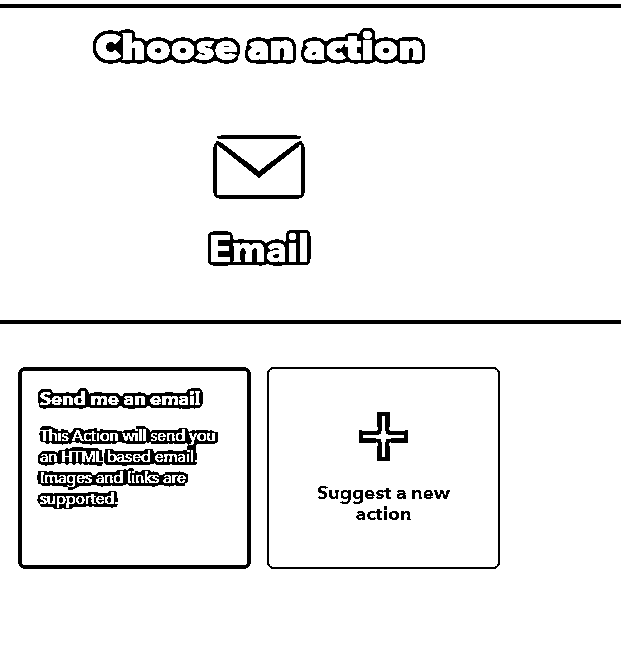
进入到下面这个界面。
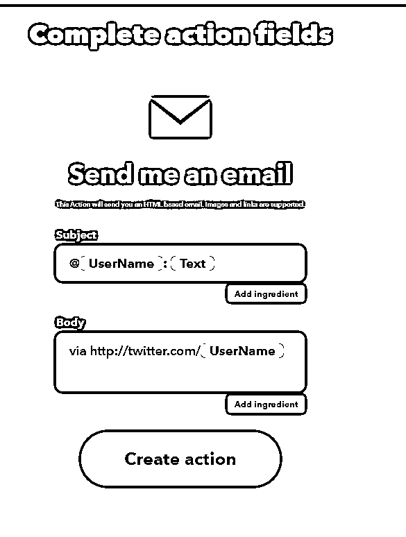
默认的内容就是这样的，如果你还想要推送别的内容到你的邮箱， 那么点击add ingredient 就能添加参数了。
设置好后，点击create action提交就行了。
这里他推送的邮箱是你账号注册的邮箱。
提交之后，这个机器人就完成设置了，当你要监控的推特账号更新内容后，就会发送到你的邮箱了。
企业微信 Webhook 官方介绍： 如何使用群机器人
把相关的人士拉入群中，即可组成一个群聊。注意包含「外部联系人」的话，不能创建机器人，也就不能实现上述功能。
如果想创建单人群聊，没有钉钉的面对面建群的便捷功能，需要先把人拉进来，然后 T 掉，即可实现单人群聊。
在群聊的设置界面中，添加机器人。
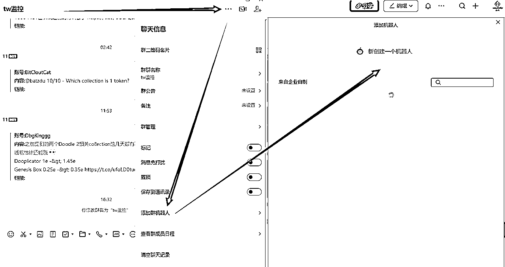
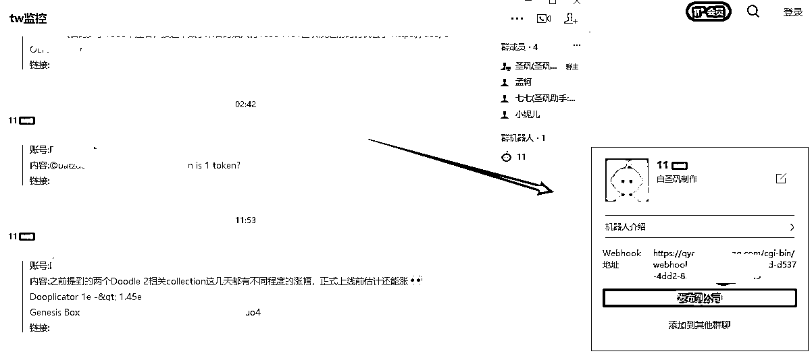
生成机器人成功后，会获取到一个 Webhook 地址，请记住这个地址。（以后我们简称 {WebhookUrl}）
可以理解为，访问这个 Webhook 地址并以某种方式携带我们需要传递的内容，就能够把我们要传递的内容，推送到企业微信中。
搜索名为「Webhooks」的触发器，选择「Make a web request」动作。
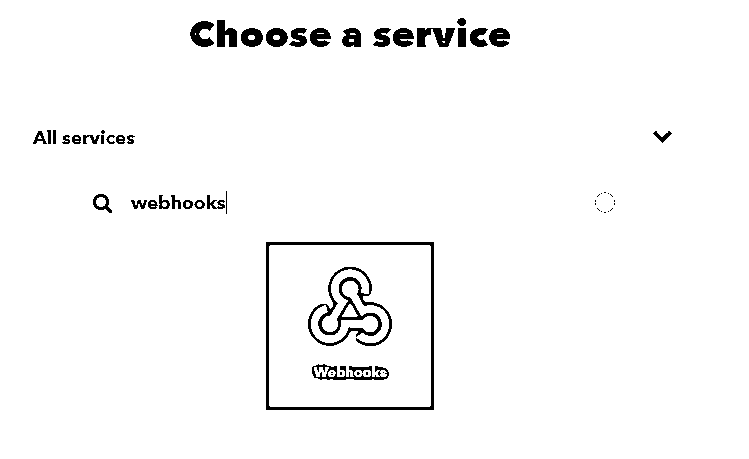
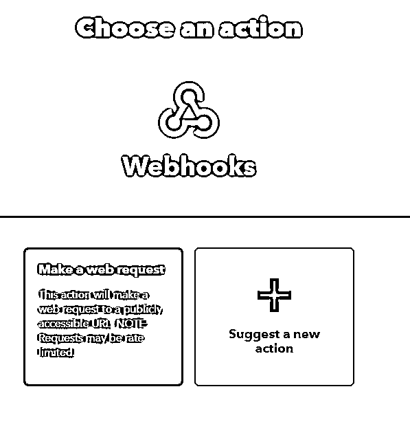
配置数据：
url填写WebhookUrl 其他的按照图中选择，Additional Headers 这个不填（因为我不知道这是啥意思）
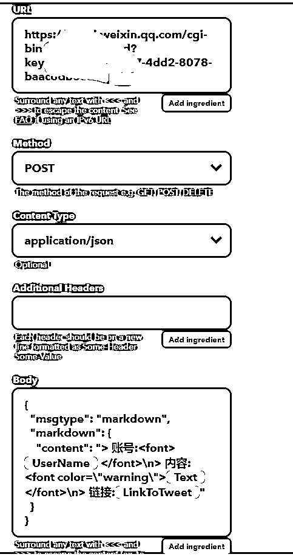
body填写内容(从下面一行的括号开始复制）：
{
"msgtype": "markdown",
"markdown": {
"content": "> 账号:{{UserName}} \n> 内容:{{Text}}\n> 链接:{{LinkToTweet}}"
}
}
配置好上面的内容后，提交就行了。
最后，你就会得到这样的机器人
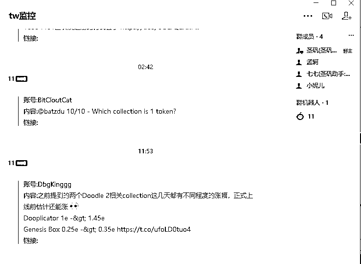
同理，钉钉也是可以这样操作的，只要能获取到webhooks地址的都可以。